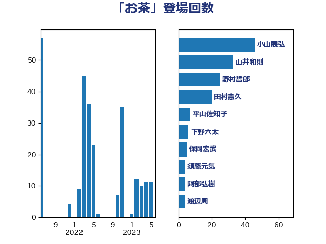

単語「お茶」

| 小山展弘 | 立憲民主党 | 46 回 |
| 山井和則 | 立憲民主党 | 33 回 |
| 野村哲郎 | 自由民主党 | 25 回 |
| 田村憲久 | 自由民主党 | 20 回 |
| 平山佐知子 | 無所属 | 7 回 |
| 下野六太 | 公明党 | 6 回 |
| 保岡宏武 | 自由民主党 | 5 回 |
| 須藤元気 | 無所属 | 4 回 |
| 阿部弘樹 | 日本維新の会 | 4 回 |
| 渡辺周 | 立憲民主党 | 4 回 |
| 階猛 | 立憲民主党 | 3 回 |
| 野間健 | 立憲民主党 | 3 回 |
| 藤巻健太 | 日本維新の会 | 3 回 |
| 紙智子 | 日本共産党 | 3 回 |
| 馬場伸幸 | 日本維新の会 | 2 回 |
| 野田国義 | 立憲民主党 | 2 回 |
| 藤田文武 | 日本維新の会 | 2 回 |
| 若林洋平 | 自由民主党 | 2 回 |
| 舟山康江 | 国民民主党 | 2 回 |
| 田嶋要 | 立憲民主党 | 2 回 |
| 池畑浩太朗 | 日本維新の会 | 2 回 |
| 新垣邦男 | 立憲民主党 | 2 回 |
| 寺田静 | 無所属 | 2 回 |
| 宮崎雅夫 | 自由民主党 | 2 回 |
| 大野泰正 | 自由民主党 | 2 回 |
| 長友慎治 | 国民民主党 | 1 回 |
| 鈴木義弘 | 国民民主党 | 1 回 |
| 鈴木敦 | 国民民主党 | 1 回 |
| 鈴木庸介 | 立憲民主党 | 1 回 |
| 金村龍那 | 日本維新の会 | 1 回 |
| 足立康史 | 日本維新の会 | 1 回 |
| 緒方林太郎 | 無所属 | 1 回 |
| 竹詰仁 | 国民民主党 | 1 回 |
| 穀田恵二 | 日本共産党 | 1 回 |
| 福島伸享 | 無所属 | 1 回 |
| 田島麻衣子 | 立憲民主党 | 1 回 |
| 玄葉光一郎 | 立憲民主党 | 1 回 |
| 片山さつき | 自由民主党 | 1 回 |
| 渡辺創 | 立憲民主党 | 1 回 |
| 江田憲司 | 立憲民主党 | 1 回 |
| 林芳正 | 自由民主党 | 1 回 |
| 早稲田ゆき | 立憲民主党 | 1 回 |
| 斎藤アレックス | 国民民主党 | 1 回 |
| 後藤祐一 | 立憲民主党 | 1 回 |
| 山添拓 | 日本共産党 | 1 回 |
| 山下芳生 | 日本共産党 | 1 回 |
| 宮路拓馬 | 自由民主党 | 1 回 |
| 大西健介 | 立憲民主党 | 1 回 |
| 大石あきこ | れいわ新選組 | 1 回 |
| 堀場幸子 | 日本維新の会 | 1 回 |
| 吉田統彦 | 立憲民主党 | 1 回 |
| 勝目康 | 自由民主党 | 1 回 |
| 井原巧 | 自由民主党 | 1 回 |
| 中島克仁 | 立憲民主党 | 1 回 |
| 三谷英弘 | 自由民主党 | 1 回 |
| 一谷勇一郎 | 日本維新の会 | 1 回 |